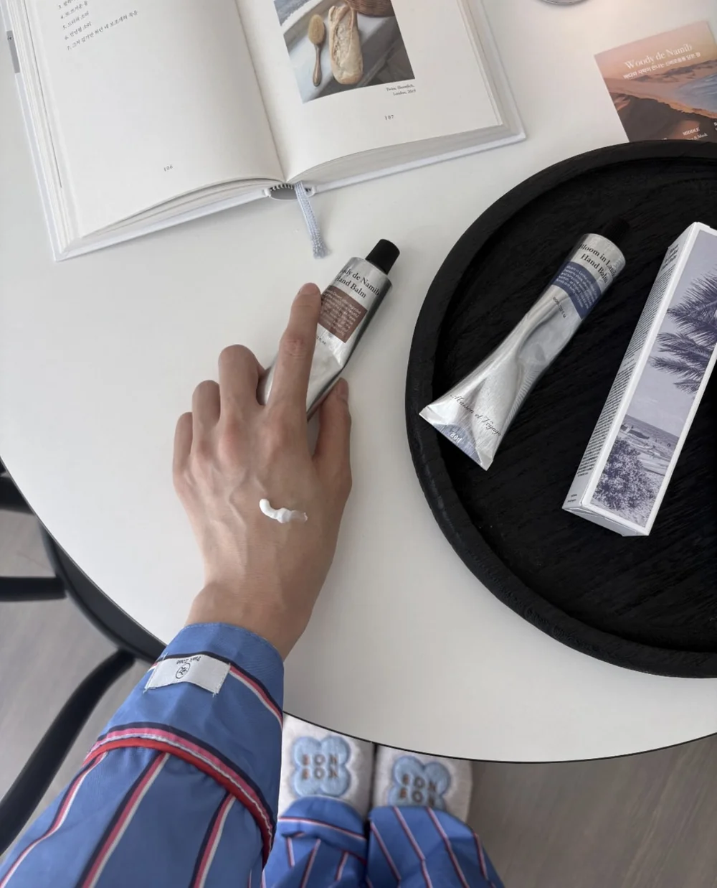
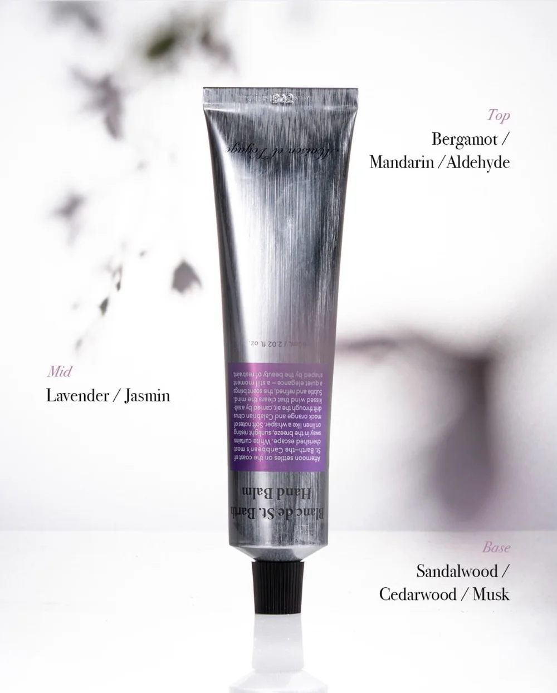
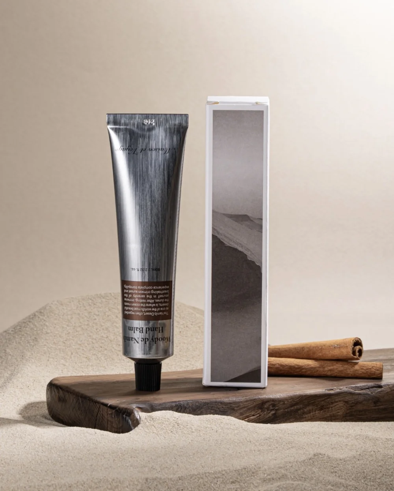
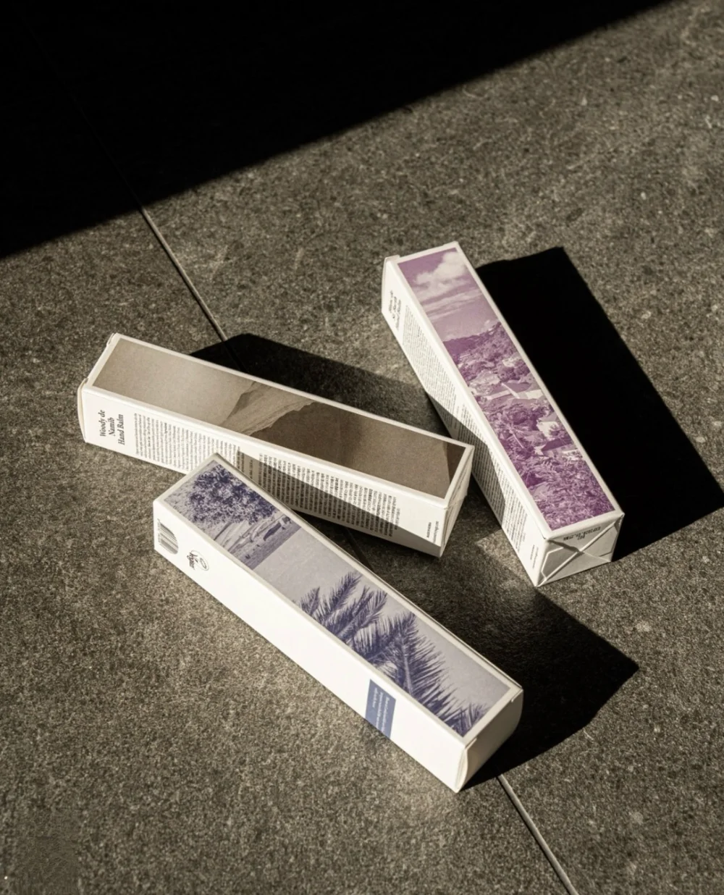

Maison et Voyage Hand Balmとは？
Maison et Voyage Hand Balmは、日常のハンドケアに香りの楽しさを加えた韓国ハンドバームです。軽やかに肌になじみながら、しっとりとしたうるおい感を残すシアバターベースの設計。
手肌だけでなく、爪まわりの乾燥が気になる方にも使いやすいHand & Nail Balmです。
体温でとろけるメルティングテクスチャー
体温でやわらかくとろけるようになじむメルティングテクスチャー。しっとり感がありながら重すぎず、日中の塗り直しにも使いやすい使用感です。
乾燥しやすい手肌にうるおいを与え、角質層までうるおいを届けます。

手肌と爪まわりまでうるおいケア
シアバターと植物由来オイルが、手肌と爪まわりにうるおいを与えます。指先までなめらかな印象へ整えたい方や、香りも楽しめるハンドケアを探している方におすすめです。
香水のように穏やかに香る
Maison et Voyage Hand Balmの魅力は、ハンドケアとしてだけでなく香りも楽しめるところです。香水をまとったように穏やかに香り、手を動かすたびにふわっと上品な印象を感じられます。
強く主張しすぎない香りなので、日常のハンドケアにも取り入れやすいアイテムです。

3種類の香り
Bloom in Lanikai
ブルーム イン ラニカイ マリンコースタルの香り青く澄んだ海と太陽のきらめきを思わせる、軽やかなマリンコースタルの香り。爽やかで清潔感のある印象が好きな方におすすめです。

Woody de Namib
ウッディ ド ナミブ ウッディムスクの香り乾いた風と木々のぬくもりを感じる、落ち着いたウッディムスクの香り。甘すぎない香りや、大人っぽい雰囲気が好きな方におすすめです。
Blanc de St. Barth
ブラン ド サンバス サンセットフローラルの香りカリブの夕暮れを思わせる、やわらかなサンセットフローラルの香り。華やかさとやさしさのある香りを楽しみたい方におすすめです。
商品情報
| ブランド | Maison et Voyage |
|---|---|
| 商品名 | Hand Balm Collection |
| 種類 | Bloom in Lanikai / Woody de Namib / Blanc de St. Barth |
| 内容量 | 60mL |
| 価格 | 税込3,300円 |
| 特徴 | シアバターベース、Hand & Nail Balm、Vegan Hand Balm、Sulfate・Paraben・Gluten・Phthalateフリー |
| 原産国 | 韓国 |
こんな方におすすめ
- 香りを楽しめるハンドバームを探している方
- 韓国のおしゃれなハンドクリームを探している方
- 手肌と爪まわりの乾燥が気になる方
- ベタつきにくく、日中も使いやすいハンドケアを選びたい方
- 香水ほど強すぎない、穏やかな香りを楽しみたい方
- 持ち歩きたくなるデザインのハンドバームを探している方
- 手元まで上品に整えたい方
使い方
乾燥が気になる時や手を洗った後に、適量を手に取り、手肌全体になじませます。爪まわりの乾燥が気になる場合は、指先まで丁寧になじませるのがおすすめです。
日中は少量を、夜のケアではやや多めに使うと、しっとりとしたうるおい感を楽しめます。
ギフトにも選びやすい理由
Maison et Voyage Hand Balmは、自分用の毎日のハンドケアとしてはもちろん、香りやデザインを楽しめるアイテムとしてギフトにも選びやすいハンドバームです。
毎日使える実用性がありながら、香水のように香りを楽しめるため、ちょっとしたお礼やプレゼントにも向いています。
